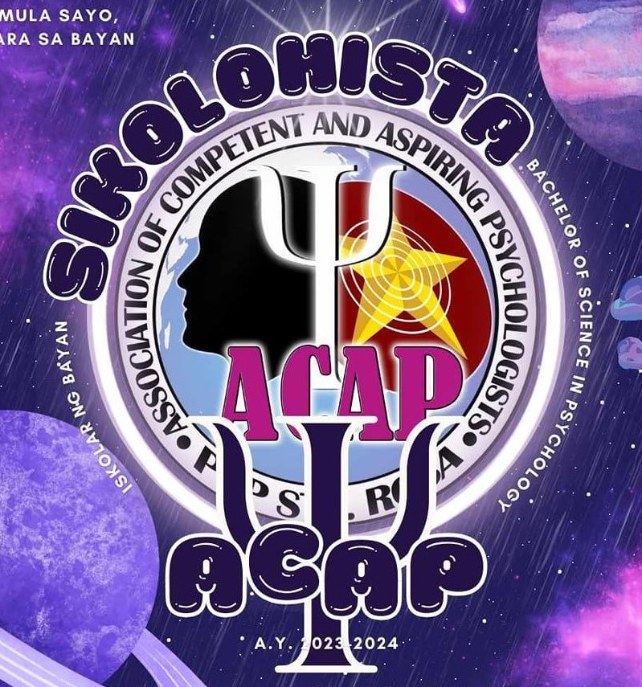

ACADEMIC STUDENT ORGANIZATIONS
ELITE (Eligible League of Information Technology Enthusiasts) is a student organization at PUP Sta. Rosa that supports students passionate about information technology. It offers seminars, workshops, hackathons, and competitions to help members enhance their technical skills and gain practical experience. ELITE fosters a community of IT enthusiasts dedicated to academic excellence, professional development, and industry networking.
- Bachelor of Science in Information Technology
Course(s) included in this organization:
The Junior Marketing Association of the Philippines (JMAP) at the Polytechnic University of the Philippines Sta. Rosa branch is a student organization that promotes an interest in marketing among students. It provides opportunities for members to enhance their skills through workshops, seminars, and collaborative projects, as well as participate in competitions and networking events. JMAP aims to support students in their marketing education and professional development, helping them connect with industry professionals and gain practical experience.
- Bachelor of Science in Business Administration, Major in Marketing Management
Course(s) included in this organization:
The Philippine Institute of Industrial Engineers (PIIE) student organization at the Polytechnic University of the Philippines, Sta. Rosa Branch, aims to support industrial engineering students through skill-enhancement workshops, seminars, and networking opportunities. It connects students with industry professionals and facilitates participation in local and national competitions. This organization is essential for fostering professional growth and leadership among its members.
- Bachelor of Science in Industrial Engineering
Course(s) included in this organization:
The Association of Electronics and Communication Engineering Students (AECES) at the Polytechnic University of the Philippines, Sta. Rosa Branch, is a student-led organization dedicated to supporting students enrolled in electronics and communication engineering. AECES aims to enhance the educational experience by organizing technical workshops, seminars, and industry visits that bridge the gap between theoretical knowledge and practical application. This organization also provides a platform for students to network with professionals and peers, fostering a community of learning and professional growth within the field.
- Bachelor of Science in Electronics and Communications Engineering
Course(s) included in this organization:
The Junior Philippine Institute of Accountants (JPIA) at the Polytechnic University of the Philippines, Sta. Rosa Branch, is a student organization tailored for those studying accountancy. It serves to enhance the academic and professional development of its members through various activities such as seminars, workshops, and national competitions. JPIA also plays a crucial role in fostering networking opportunities with industry professionals and alumni, thereby helping students gain insights and connections valuable for their future careers in accounting.
- Bachelor of Science in Accountancy
- Bachelor of Science in Management Accountancy
Course(s) included in this organization:
The Guild of Imporous and Valuable Educators (GIVE) at the Polytechnic University of the Philippines, Sta. Rosa Branch, is a dedicated student organization for those enrolled in education programs. GIVE is committed to nurturing the professional and personal growth of future educators through engaging activities such as mentorship programs, educational seminars, and community service initiatives. The organization aims to foster a strong sense of community and collaboration among its members, equipping them with the skills and experiences necessary to excel in the field of education.
- Bachelor of Secondary Education, Major in English
- Bachelor of Secondary Education Major in Filipino
- Bachelor of Secondary Education Major in Math
- Bachelor of Technology and Livelihood Education Major in Home Economics
Course(s) included in this organization:
The Junior Executives of Human Resource Association (JEHRA) at the Polytechnic University of the Philippines, Sta. Rosa Branch, is a student organization specifically for those studying human resource management. JEHRA aims to prepare its members for future careers in HR by providing a range of activities including professional development workshops, guest lectures from industry leaders, and real-world HR simulations. The organization also fosters networking opportunities, allowing members to connect with professionals and peers in the field, thereby enhancing their understanding of HR practices and trends.
- Bachelor of Science in Business Administration, Major in Human Resource Management
Course(s) included in this organization:

Association of Competent and Aspiring Psychologists
The Association of Competent and Aspiring Psychologists (ACAP) at the Polytechnic University of the Philippines, Sta. Rosa Branch, serves as a vibrant community for students pursuing degrees in psychology. ACAP aims to support its members' professional and personal development through activities like workshops, seminars, and peer mentoring, focusing on both academic advancements and practical skills in psychology. The organization also fosters a supportive network, encouraging collaboration and connections among students, faculty, and professionals in the psychology field to enhance the educational experience and career readiness of its members.
- Bachelor of Science in Psychology
Course(s) included in this organization:
NON - ACADEMIC STUDENT ORGANIZATIONS
The Chorale at the Polytechnic University of the Philippines, Sta. Rosa Branch, is a student organization dedicated to the art of choral singing. This group brings together students with a passion for music, providing them with opportunities to develop their vocal skills, learn a diverse repertoire, and perform in various events both within and outside the university. The chorale aims to foster a sense of community and teamwork among its members while also promoting cultural enrichment and appreciation for the choral arts within the university and the broader community.
The Artist Guild Dance Squad at the Polytechnic University of the Philippines, Sta. Rosa Branch, is a dynamic student organization focused on dance and performance arts. This group provides a platform for students with a passion for dancing to showcase their talents, enhance their skills, and explore various dance genres through regular practice sessions and performances. The Dance Squad actively participates in university events and competitions, promoting not only artistic expression and teamwork among its members but also contributing to the vibrant cultural life of the campus.
TANGLAW is the official student publication of the Polytechnic University of the Philippines, Sta. Rosa Branch (PUP-SRB). As a student-run organization, TANGLAW serves as a vital platform for journalism and communication, providing the university community with news, analyses, features, and commentary relevant to campus life and beyond. The publication aims to foster a culture of critical thinking and transparency, encouraging student engagement and discourse through responsible and impactful journalism. Members of TANGLAW gain valuable experience in writing, editing, and media production, contributing to their development as future journalists and communicators.
LIBERTAS, the PUP Sta. Rosa Branch Debate Society, is a student organization dedicated to enhancing the oratory and argumentative skills of its members. This society provides a platform for students to engage in structured debates, fostering critical thinking, public speaking, and a deeper understanding of global and local issues. Through regular training sessions, competitions, and workshops, LIBERTAS aims to cultivate a community of articulate and informed debaters who are equipped to discuss and analyze diverse perspectives, contributing to their academic and professional development in meaningful ways.
TAPNOTCH, or Transformation Advocates through Purpose-driven and Noble Objectives Toward Community Holism, is a student organization at the Polytechnic University of the Philippines, Sta. Rosa Branch. This organization is committed to fostering community development and social responsibility among its members. Through various initiatives and projects, TAPNOTCH aims to address and contribute solutions to social issues, promote sustainable development, and enhance the quality of life within the community. It provides a platform for students to engage in meaningful actions that reflect their dedication to social change, leadership, and holistic community engagement.
SIGMA, or the Supreme Innovators' Guild for Mathematics Advancement, is a student organization at the Polytechnic University of the Philippines, Sta. Rosa Branch. It is designed to cultivate interest and excellence in mathematics among its members. Through activities such as workshops, seminars, and math competitions, SIGMA encourages analytical thinking and problem-solving skills. This organization provides a supportive community for students passionate about mathematics, offering opportunities to explore advanced topics and apply mathematical concepts in innovative ways.